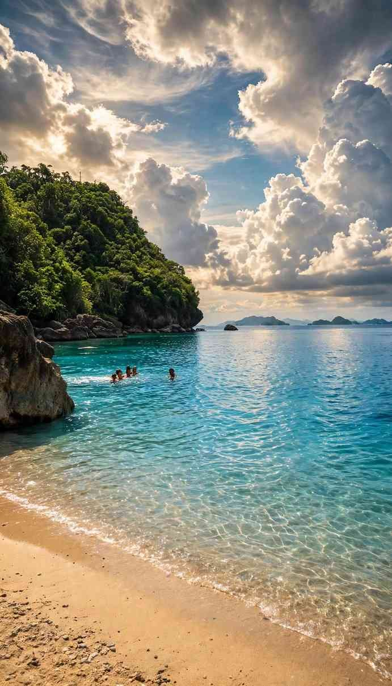

Over the 2025 Christmas break, the Department of Tourism counted 56,543 guests at Malajog Beach in Calbayog City, Samar. That put it ahead of El Nido and Siargao in the same holiday report, which surprises anyone who has never heard the name. Outside Samar, few people have.
Malajog sits in the barangay of the same name, northwest of Calbayog's city centre, and locals also call it Looc Beach. It is a short, curved shore facing the Samar Sea, with a forested ridge on one side and the small islet of Daraga a little way offshore. A zipline links the two, and it is the reason many visitors come.
Set your expectations before you go. The sand runs grey to dark rather than white, the beach is small, and on a holiday it fills up fast. What you get in return is clear, calm water in the dry months, a ridge walk with real views, and a beach that feels like a local weekend spot rather than a resort strip.

How to get to Malajog Beach
Calbayog is the largest city on Samar Island and the easiest place on the west coast to reach. Philippine Airlines flies the Manila to Calbayog route, and Cebgo has run a morning Cebu to Calbayog flight of about an hour, though not every day of the week, so check the current schedule when you book. The city also has a seaport with trips to Cebu, and buses from Manila arrive after a full day on the road. Tacloban, the regional capital, is about 172 km to the south.
From the city, take a tricycle, jeepney or private car northwest along the national highway toward Malajog. Plan on 20 to 35 minutes depending on traffic and roadworks. Tell the driver "Malajog Beach" or "the zipline" and you will be dropped at the paved road that runs down from the highway to the shore. Agree on the tricycle fare before you set off, and arrange a pickup time if you go late in the day, since rides back can be harder to find once the crowd thins.
The ridge trail and the zipline
The Malajog Ridge Nature Park starts a few metres off the highway. Its eco-trail runs for almost a kilometre through thick forest and past marble and limestone outcrops, with view decks looking over the Samar Sea. Caves along the ridge have turned up pottery shards, so stay on the marked path. Allow 30 to 45 minutes on foot to reach the zipline platform. Much of it is concrete steps, which get slippery after rain, and there is little shade near the top, so carry water.
The zipline drops about 750 metres from the tip of the ridge to Daraga islet, and it was the first of its kind in Eastern Visayas. You can ride seated or lying flat in the "Superman" position. Prices have moved since it opened: the launch fee was ₱250, and later reports put the seated ride at around ₱300 and the Superman ride a little higher. A boat waits on the islet to ferry riders back to the beach. Rides stop in bad weather, and operating days have changed over the years, so call the Calbayog City tourism office before you plan your day around it.
Fees, cottages and what to pack
Expect small charges for entrance and parking, and a rental fee for the open-air cottages along the sand. Cottage rates depend on size, and an attendant may come by for payment once you sit down, so ask the price first if you are on a tight budget. Bring cash in small bills, because card payment is unlikely here.
Pack drinking water, snacks, sunscreen and a bag for your own rubbish. Litter on the sand and in the shallows has been a sore point in the past. The city has since paved the access road and organised beach clean-ups, but a busy holiday still leaves its mark, and carrying out what you bring in helps. If you plan to ride the zipline, wear shoes with grip for the trail and leave anything loose with someone on the beach.
When to go, and how to dodge the crowds
The sea is at its calmest in the summer months, roughly March to May, which is also when the beach looks its best. Samar faces the Pacific and gets its share of storms in the second half of the year, so check the PAGASA forecast before travelling between July and December. Strong winds can cancel both boat trips and zipline rides.
Timing matters as much as the season. Sundays bring families from around the city, and the Christmas and Holy Week holidays are when those big visitor counts happen. A weekday morning gives you the most space and the best chance of a cottage. Watch the tide too: at high water the strip of sand shrinks to very little, so a tide table is worth a look before you pick your hour.
Turning Malajog into a full day in Calbayog
Malajog takes half a day, which leaves room for more. Calbayog calls itself the City of Waterfalls, and its tourism office has counted 22 of them; Tarangaban Falls is the one most often listed as ready for visitors. In the city, the Samar Archaeological Museum is a good rainy-day stop. The city has also promoted a "Malajog loop" that adds the Bamboo Sunset viewpoint and a kayak trip to the Marble Park, and the tourism office can tell you which parts are running and who to contact.
Calbayog also works as a base for the rest of Samar's west and north coasts. With an extra day or two you can head north for the tide-shaped cliffs covered in our guide to the Biri Island rock formations, or go south to the river caves described in the Samar caves guide.
Is Malajog Beach worth the trip?
If you want powdery white sand and a quiet resort, no. If you are already in Samar, or you like places that most travel lists skip, Malajog makes an easy and cheap half day: a forest walk, a long ride over the water, and a swim in calm sea a short ride from the city. Go on a dry-season weekday, check that the zipline is running, and bring your own water and rubbish bag. The holiday crowds tell you the locals rate it, and on a quiet morning it is easy to see why.
Sources
DOT: Boracay, Baguio draw holiday crowds – Inquirer, 6 January 2026
Boracay tops holiday break tourist arrivals – Daily Tribune, 5 January 2026

Comments
No comments yet. Been here recently? Share a tip or ask a question.
Leave a Reply